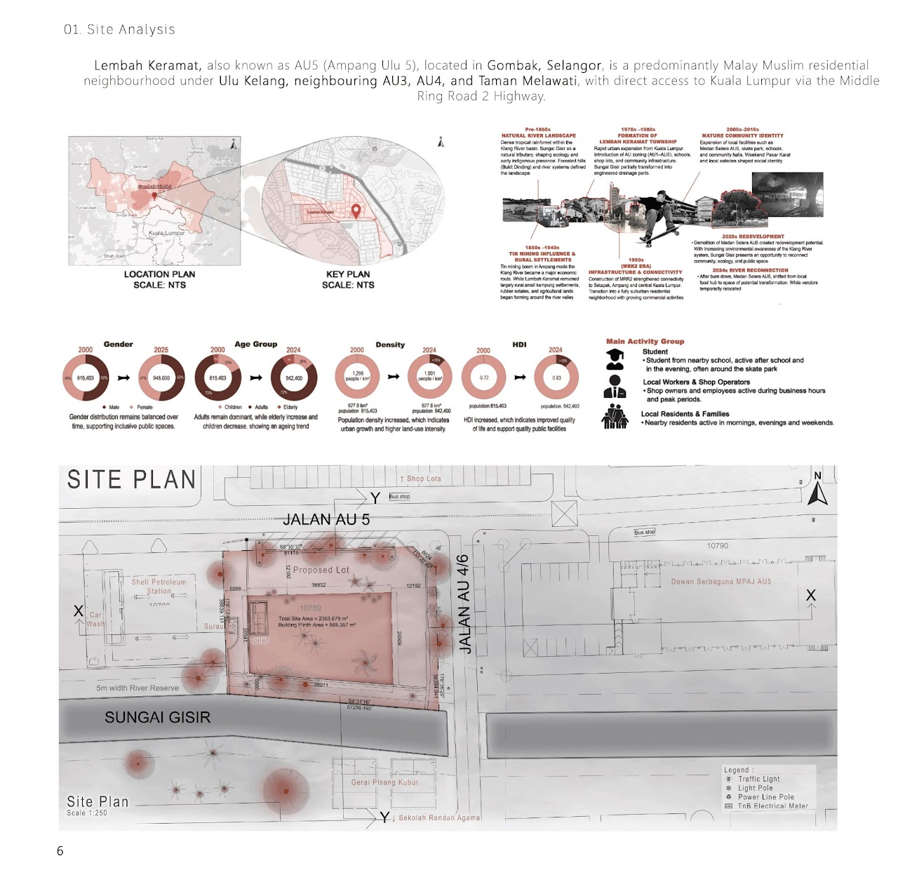
AU5 Lembah Keramat
The site for the Sungai Gisir Community Library is situated in Lembah Keramat, beside Sungai Gisir, a tributary of Sungai Klang. Formerly a Medan Selera, it is now a cleared site with strong potential for community use.
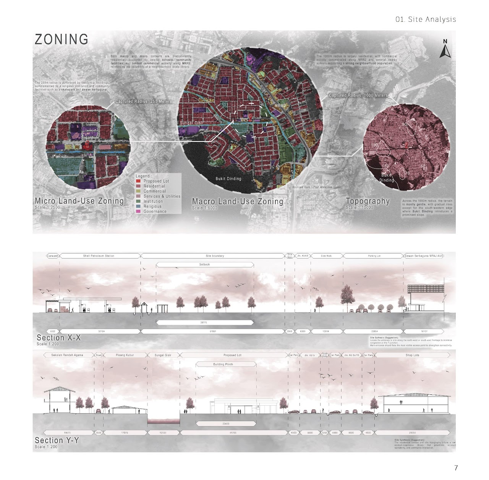
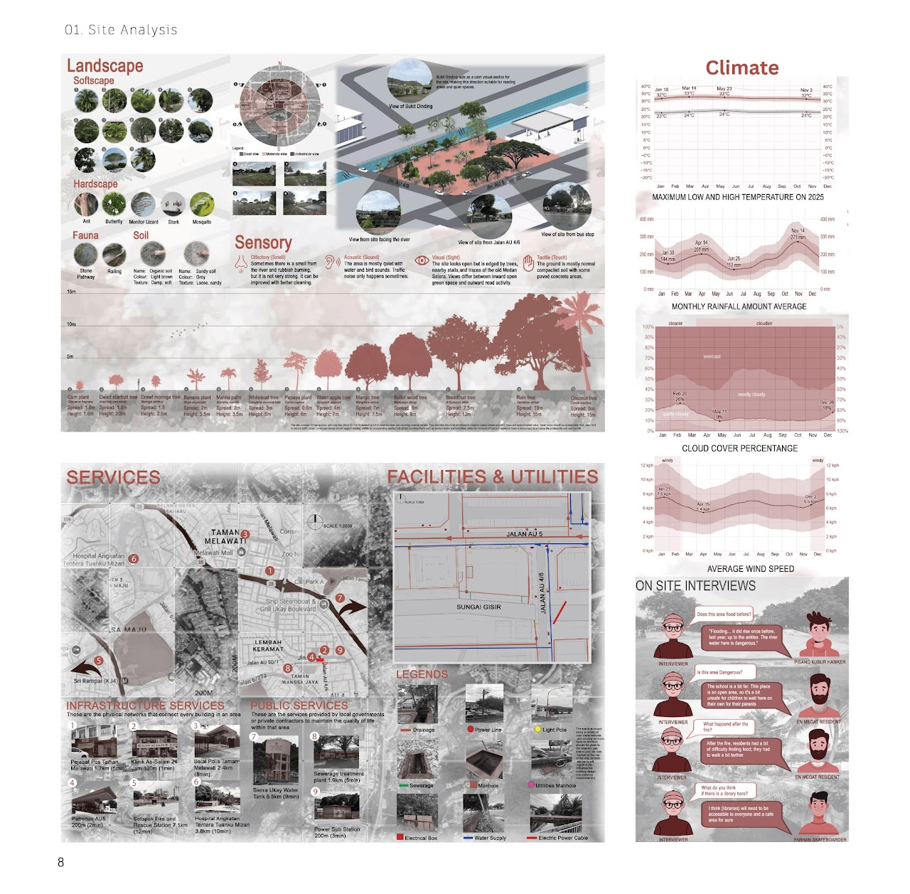
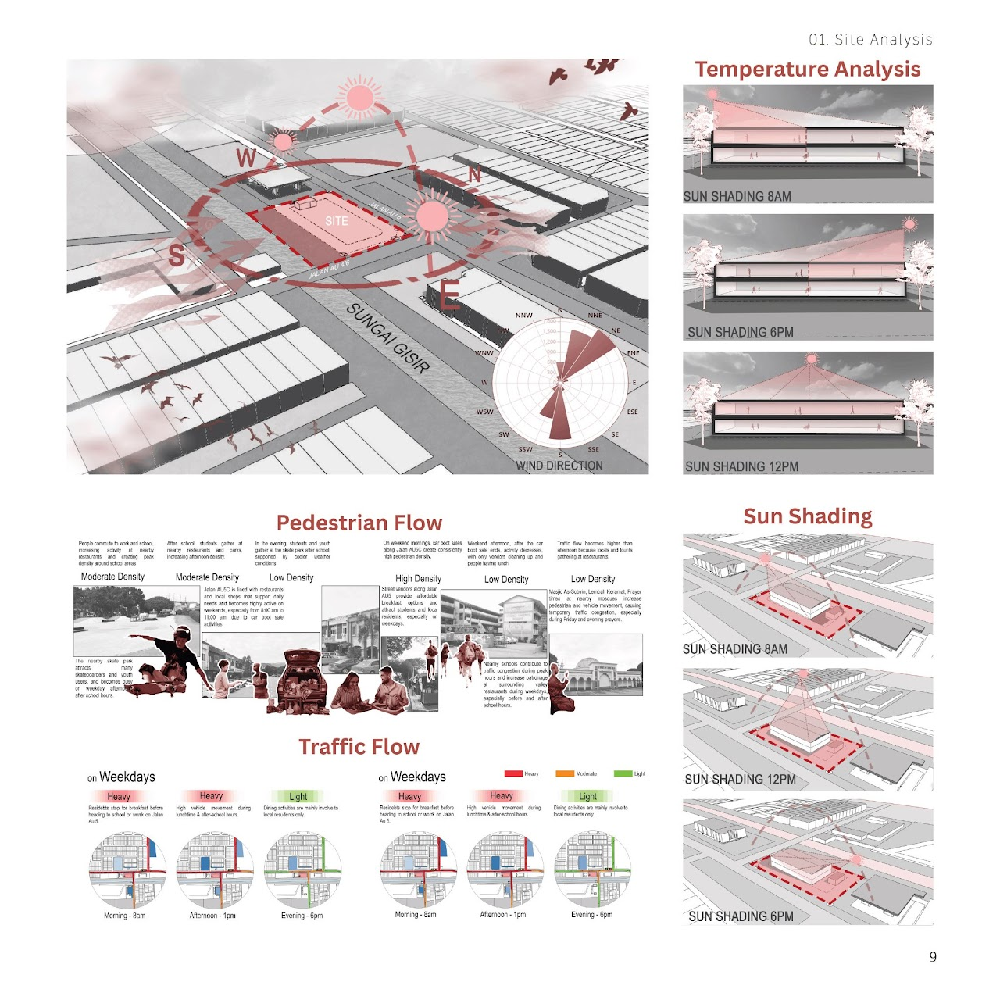
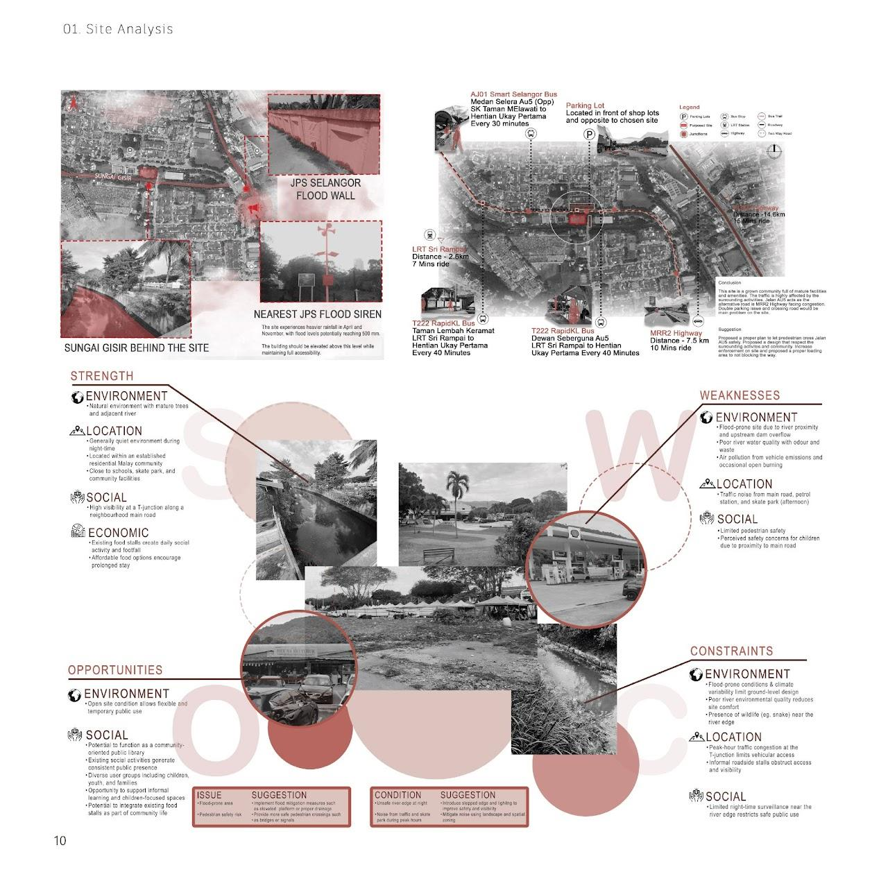
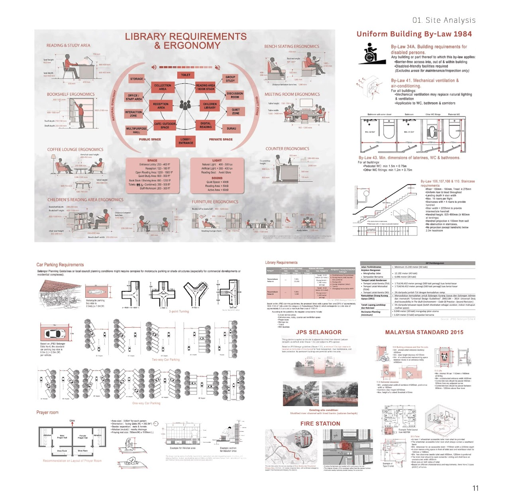
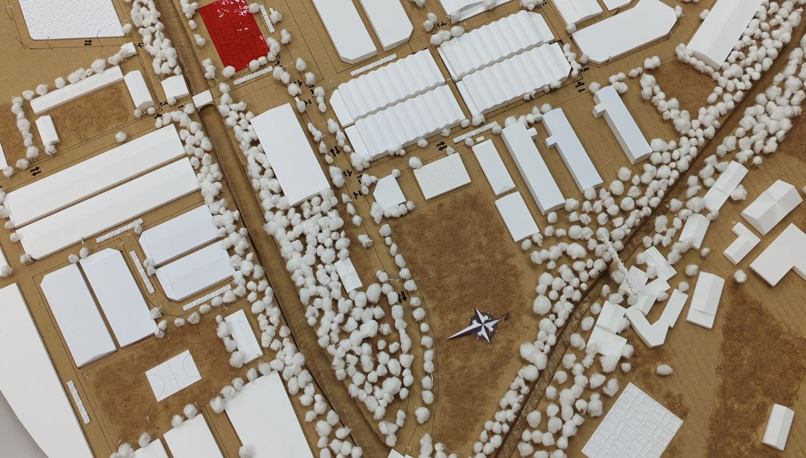
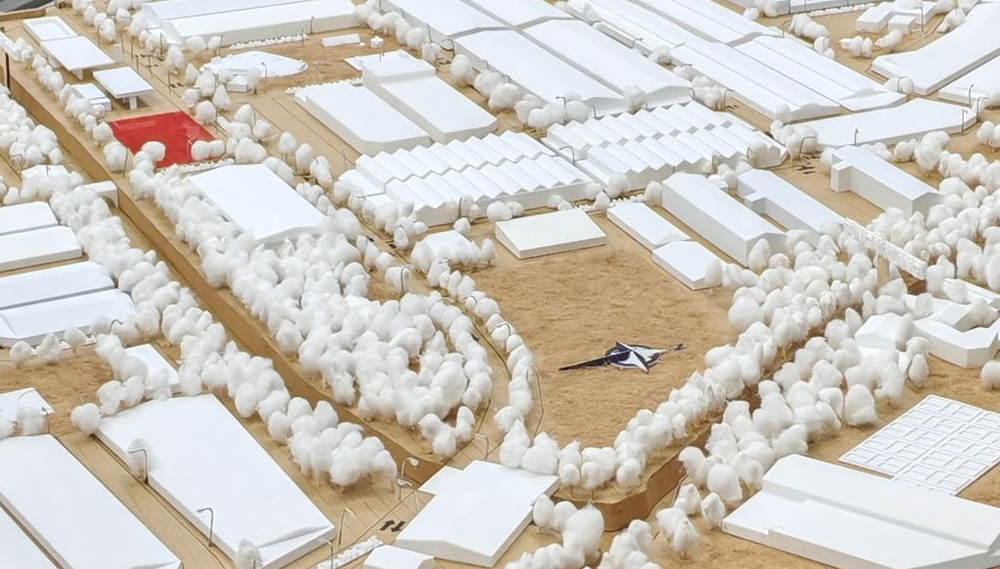
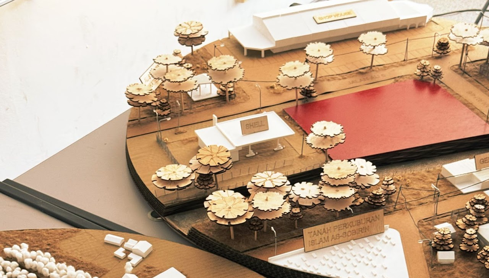
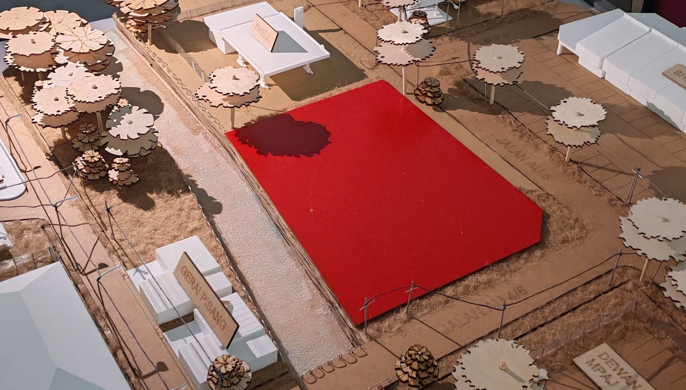
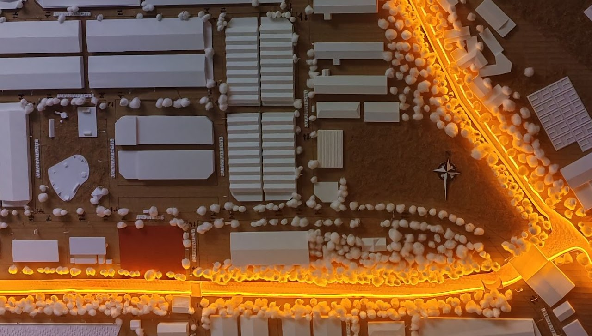
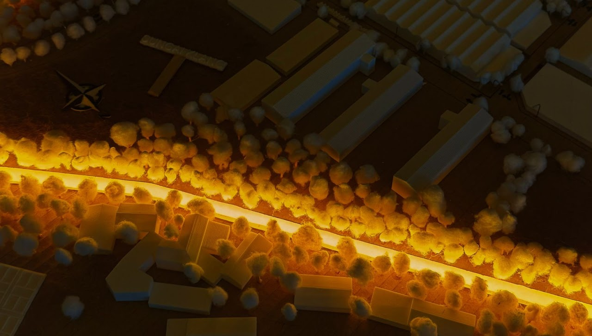
Lembah Keramat is a residential area in Ulu Kelang well-known for its lively street food culture and thriving local community. Before a fire seriously damaged it, Medan Selera AU5 was a well-liked community food court and social meeting place.